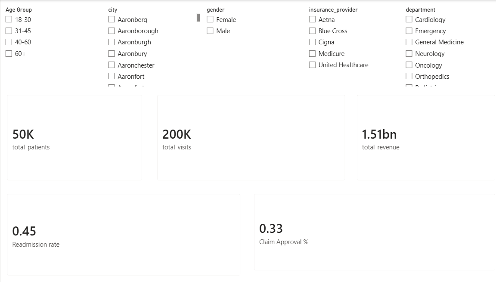
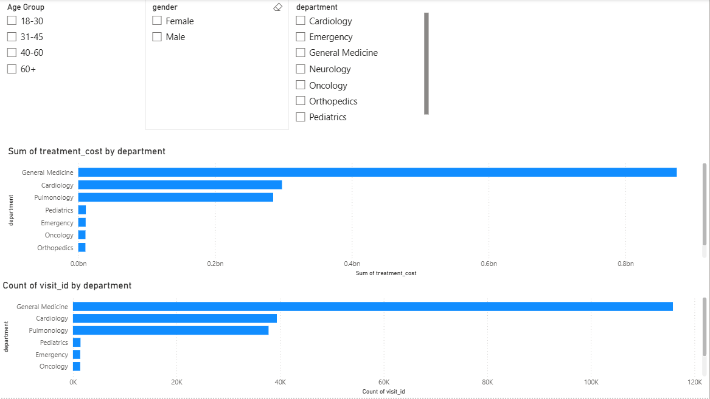
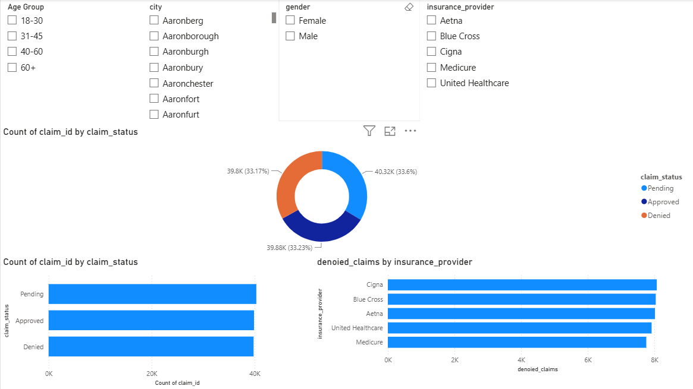
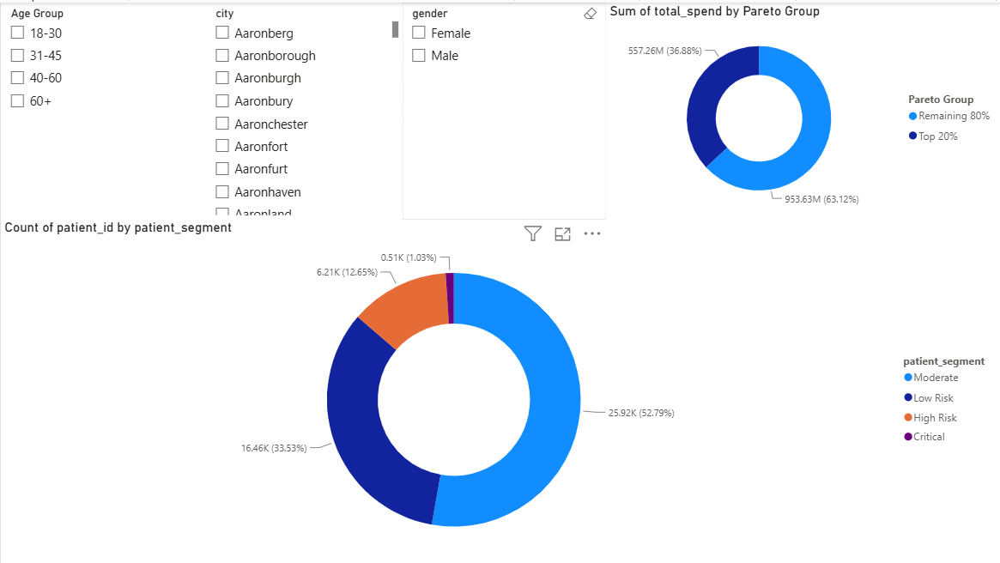
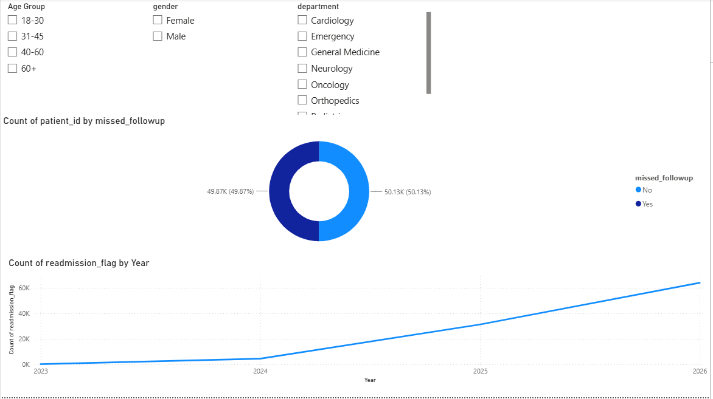

Health Care Revenue Cycle & Patient Risk Analytics

Business Problem
Healthcare organizations often face:
- High patient readmission rates
- Insurance claim denials
- Delayed settlements
- Missed follow-up appointments
- Revenue leakage across departments
The objective of this project is to use analytics to identify operational risks, improve collections, and enhance patient outcomes.
Objectives
- Identify high-risk patients
- Analyze insurance claim approval and denial trends
- Measure department-level profitability
- Track patient follow-up adherence
- Reduce readmission risks
- Improve revenue cycle performance
Technology Used
Python
Pandas
Numpy
Matplotlib
Seaborn
SQL
Power BI
Tableau
Excel
Project Workflow
- Data generation & Collection
- Data Cleaning
- EDA
- Feature Engineering
- SQL Analysis,Data Modelling & Kpi Views
- Dashboard Creation (Power bi & Tableau)
Business KPIs
- Total Patients
- Total Visits
- Total Revenue
- Readmission Rate
- Claim Approval %
Dashboard Preview



